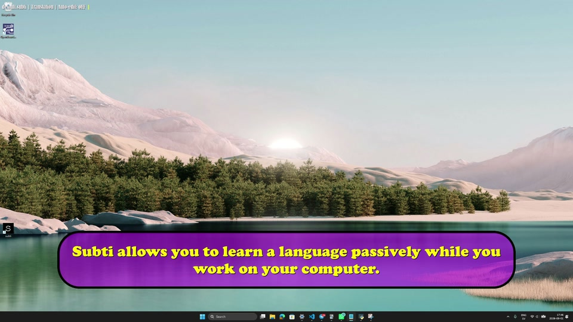
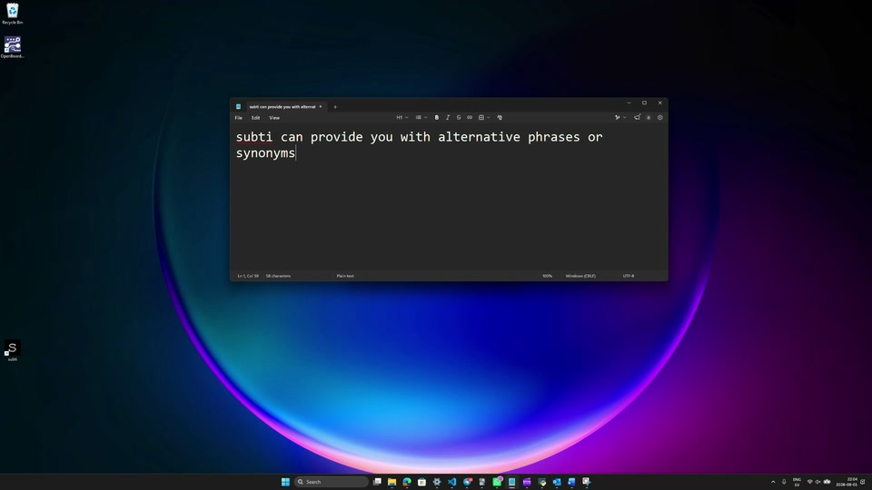
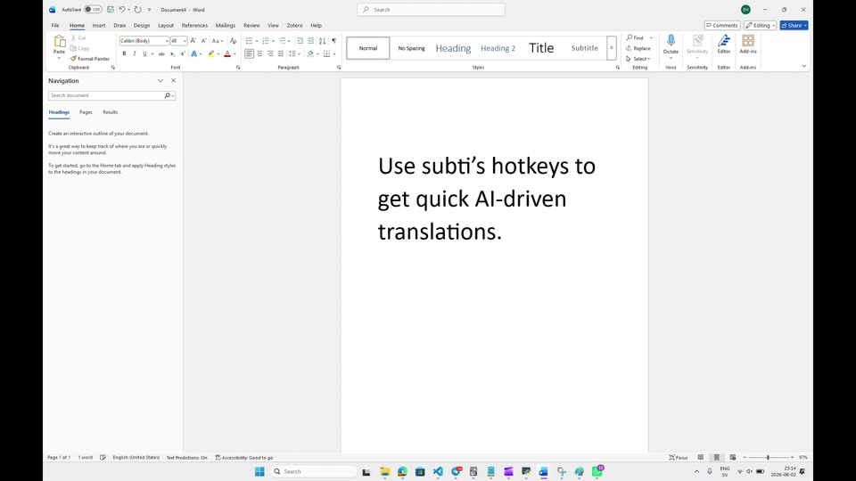

subti 0.0.1
Language help with hotkeys
subti is a global interface for text manipulation in MacOS and Windows. Supporting all major LLM models, it automates AI queries with hotkeys. Among other things, it can be used for:
- Passive and active language learning. Let subti provide translated live subtitles to your writing or give you lists of vocabularies. The principle of learning languages passively through subtitling is well-documented.
- Quick translations and copy-editing. Get the right word or phrase straight away without having to ask. Unlike regular dictionaries, LLM's support whole phrases.
- Fetching synonyms and alternative phrasings. Unlike regular synonym dictionaries, LLM's can provide entire alternative phrasings.
- Custom AI queries. subti lets you assign hotkeys to your common queries that can speed up manual tasks, whatever these may be.
- Speech to LLM. Send an AI prompt quickly by pressing a hotkey and speaking into your computer's microphone.


